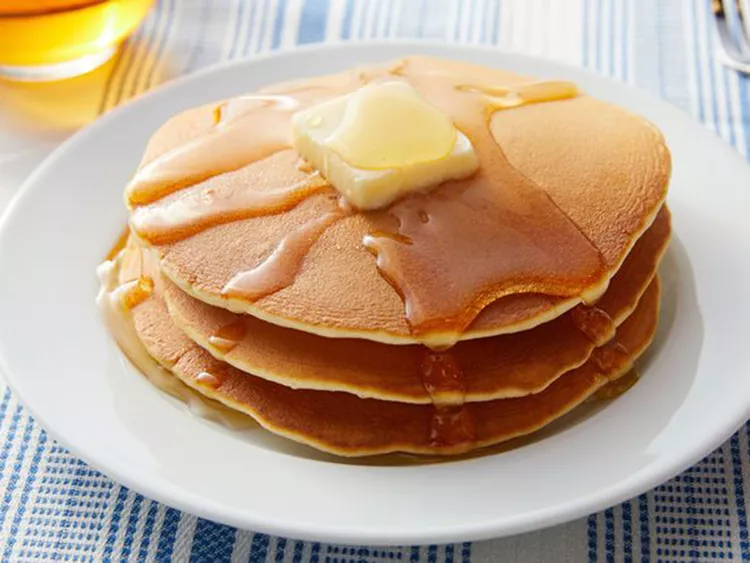

Pancake

About:
Pancake is a very popular breakfast dish that anyone can make.
This easy pancake recipe doesn't require much thought early in the morning
and the pancakes taste great!
Ingredients:
- 1 cup all-purpose flour
- 2 tablespoons white sugar
- 2 teaspoons baking powder
- 1 teaspoon salt
- 1 cup milk
- 2 tablespoons vegetable oil
- 1 egg, beaten
Steps:
-
Combine flour, sugar, baking powder, and salt in a large bowl.
Make a well in the center, and pour in milk, oil, and egg. Mix
until smooth.
-
Heat a lightly oiled griddle or frying pan over medium-high heat.
Pour or scoop batter onto the griddle, using approximately 1/4 cup
for each pancake.
Cook until bubbles form and the edges are dry, 1
to 2 minutes.
Flip and cook until browned on the other side.
Repeat with remaining batter.
- Serve hot and enjoy!